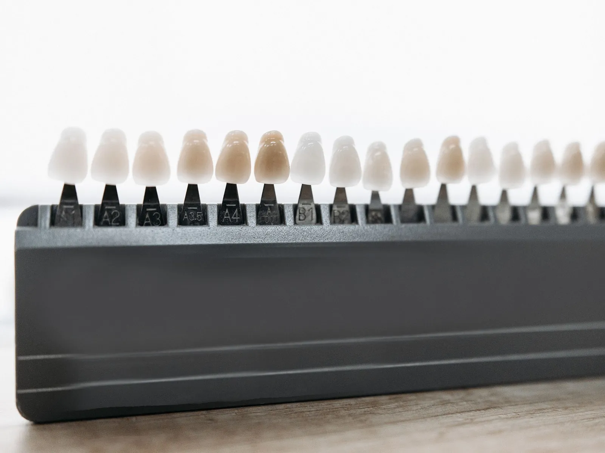
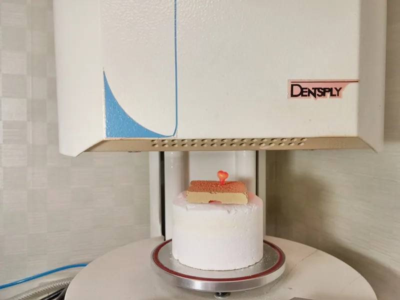

홈 › 심미치료
심미치료

심미치료는 치아 색과 모양, 잇몸선이 신경 쓰일 때 하는 치료로 치아미백, 라미네이트, 올세라믹, 잇몸성형이 있습니다. 어떤 치료가 맞는지는 치아 상태를 진찰한 뒤 함께 정합니다.
한눈에 보기
- 진료 층
- 심미보철 2·3층 · 미백 3층
- 치료
- 치아미백 · 라미네이트 · 올세라믹 · 잇몸성형
- 미백 장비
- 비욘드 치아미백 라이트 · 알라딘 미백기
- 보철물 제작
- 4층 자체 기공실
- 비용
- 진찰 후 항목별로 미리 안내합니다


보철물은 4층 기공실에서
보철물을 만들고 다듬는 자체 기공실이 같은 건물 4층에 있습니다. 기공실에서는 도재(포세린) 보철물을 굽는 소성 장비를 씁니다.

자주 묻는 질문
라미네이트와 올세라믹은 어떻게 다른가요?
라미네이트는 앞니 바깥쪽 표면만 조금 다듬고 얇은 판을 붙이는 방법이고, 올세라믹은 치아색 세라믹으로 치아 전체를 감싸는 방법입니다.
치아미백은 몇 층에서 하나요?
치아미백은 3층에서 진료합니다. 요일마다 진료하는 층이 달라 아래 진료시간 표를 함께 보세요.
진료시간 · 오시는 길
031-683-7575경기도 평택시 안중읍 안중로 132
- 성심주차장을 이용하시면 주차권에 병원 도장을 찍어 드려 무료로 주차할 수 있습니다
(이면도로 주차는 유료). - 본원 뒤 주차장은 자리가 좁습니다. 이용하실 때는 주차권을 받아 가셔야 나가실 수 있습니다.
진료시간
- 월
- 전체
- 오전 9시 ~ 오후 6시교정과 오전 10시 ~ 오후 6시
- 화
- 전체
- 오전 9시 ~ 오후 8시
- 수
- 3층
- 오전 9시 ~ 오후 6시
- 목
- 2층
- 오전 9시 ~ 오후 8시
- 금
- 전체
- 오전 9시 ~ 오후 8시2층 오전 9시 ~ 오후 6시교정과 오후 2시 ~ 8시
- 토
- 전체
- 오전 9시 ~ 오후 2시점심시간 없음
- 점심
- 평일
- 오후 1시 ~ 2시
- 휴진
- 일요일 · 공휴일 휴진